协会新闻
澳洲重庆市文化体育教育旅游协会（CSETA）公众号发布的活动报道与协会观察，共 23 篇，按时间倒序排列。
从墨尔本到重庆奉节｜白马市市长出席「山城力量计划」启动活动，首批公益物资抵达
2026年6月18日，「山城力量计划」在墨尔本《重庆市民》活动期间发起。十位爱心人士参与认捐，6月21日物资陆续抵达重庆奉节。
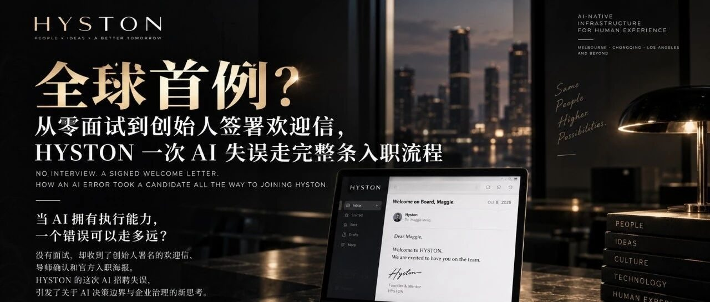
AI 招聘流程出错，未经面试候选人被推进至正式入职官宣｜HYSTON 公开披露自身 AI 失误，引发对 AI Agent 授权边界的讨论
HYSTON Pty Ltd 是总部位于墨尔本的跨文化创意企业，业务覆盖澳大利亚与中国（重庆），战略定位为Building AI-native infrastructure for human experience。
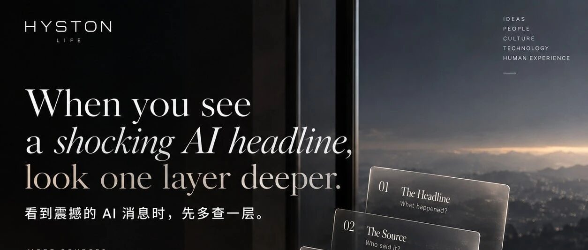
协会观察｜看到震撼的 AI 消息时，先多查一层
今天，一位关心我们发展的朋友转来了一条 AI 产品发布的视频。因为是朋友特意分享的，我们把视频完整看完了。
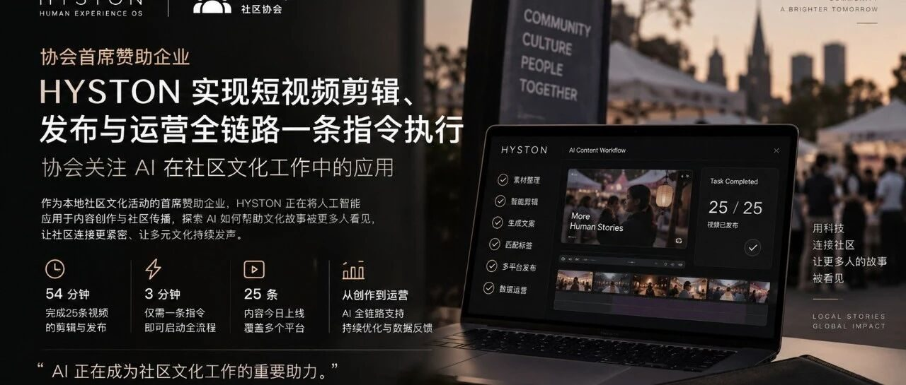
协会首席赞助企业 HYSTON 实现短视频剪辑、发布与运营全链路一条指令执行，协会关注 AI 在社区文化工作中的应用
协会观察｜154天的积累，一条指令跑通短视频全链路协会首席赞助企业 HYSTON 实现短视频剪辑、发布与运营全链路一条指令执行，协会关注 AI 在社区文化工作中的应用
从《重庆市民》到维州创新展｜白马市市长 Cr Kirsten Langford 第五次与HYSTON团队共创内容
从《重庆市民》到维州创新展｜白马市市长 Cr Kirsten Langford 第五次与HYSTON团队共创内容从城市音乐、公益计划到社区活动，协会与 Whitehorse 地方政府的连接持续深化
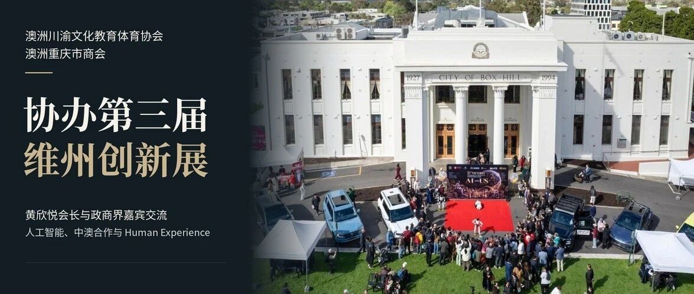
澳洲川渝文化教育体育协会、澳洲重庆市商会协办第三届维州创新展，黄欣悦会长与政商嘉宾共话AI、中澳合作与Human Experience
2026年10月4日，第三届维州创新展暨美食文化节在墨尔本Box Hill市政厅举行。活动由聚澳传媒（Ausfocus International Media Group）与澳亚商贸发展协会联合主办，澳洲川渝文化教育体育协会、澳洲重庆市商会等机构协办，比亚迪（BYD）担任首席赞助商。
川渝文化亮相墨尔本联邦广场｜中澳政界及社区嘉宾到访展位交流
近日，Chinese Traditional Cultural Festival 2026在墨尔本联邦广场举行
澳洲重庆市文化体育教育旅游协会与重庆民营经济国际合作商会举行工作交流
延续2025年9月合作渊源，共建渝企出海澳洲合作通道近日，澳洲重庆市文化体育教育旅游协会黄欣悦会长一行到访重庆
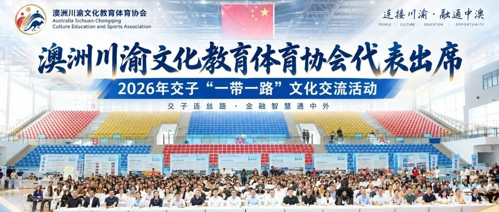
澳洲川渝文化教育体育协会代表出席2026年交子“一带一路”文化交流活动
澳洲川渝文化教育体育协会代表出席2026年交子“一带一路”文化交流活动
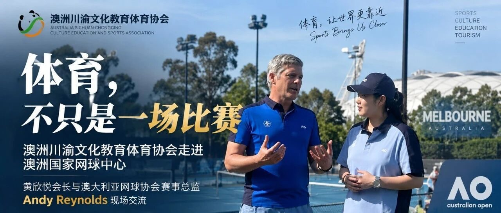
澳洲川渝文化教育体育协会走进澳洲国家网球中心｜从一场赛事对话，看体育如何连接城市、产业与中澳交流
澳洲川渝文化教育体育协会走进澳洲国家网球中心｜从一场赛事对话，看体育如何连接城市、产业与中澳交流
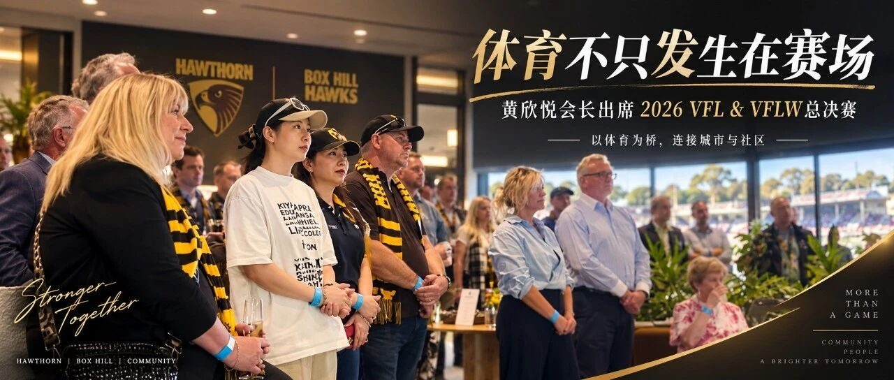
以体育为桥｜从VFL总决赛走进澳大利亚社区体育与城市连接
以体育为桥｜从VFL总决赛走进澳大利亚社区体育与城市连接
澳洲重庆市文化体育教育旅游协会线上参加重庆市“十五五”超大城市现代化治理规划解读发布会
澳洲重庆市文化体育教育旅游协会组织线上参加重庆市加力培育建设国际消费中心城市政策例行吹风会
黄欣悦会长线上参加重庆市国际消费中心城市政策例行吹风会并发表观察观点: 从入境便利化到文体旅融合，进一步理解重庆国际消费中心城市建设新举措
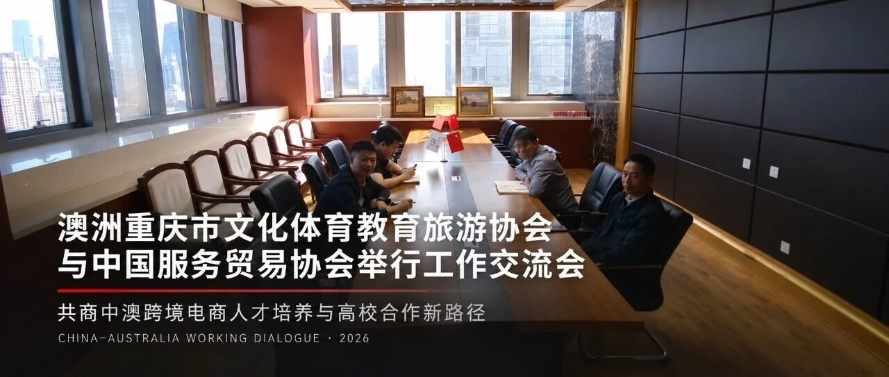
澳洲重庆市文化体育教育旅游协会与中国服务贸易协会举行工作交流会
澳洲川渝文化教育体育协会受邀参加2026年交子一带一路文化交流活动新闻稿
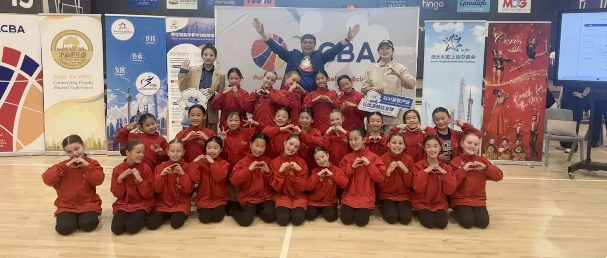
以篮球为纽带 共叙中秋情谊｜澳洲重庆市商会会长黄欣悦出席2026澳中篮球协会中秋篮球嘉年华
9月13日，2026澳中篮球协会中秋篮球嘉年华在墨尔本 State Basketball Centre 举行。
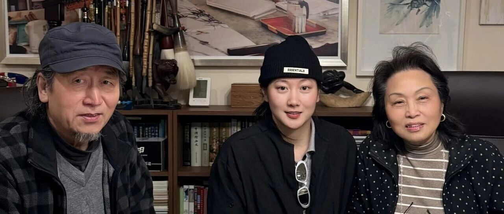
山海有回声｜一份来自墨尔本的艺术心意回到重庆
近日，一份跨越南北半球的艺术心意，从澳大利亚墨尔本抵达重庆。
121家企业给出的答案：真正的出海，缺的不是意愿，而是海外落地能力
澳洲重庆市商会关注《中国服务贸易企业发展报告》从“想出海”到“能落地”，中澳服务贸易正在进入下一阶段。
从大湾区到澳大利亚: 服务贸易正在打开中澳合作新空间 | 澳洲重庆市商会关注《服务贸易新观察》2026年第4期
澳洲重庆市商会关注《服务贸易新观察》2026年第4期
《重庆市民》城市音乐 Live Film 暨重庆直辖二十九周年庆祝活动在墨尔本举行
2026年6月18日，《重庆市民》城市音乐 Live Film 暨重庆直辖二十九周年庆祝活动在墨尔本举行。活动汇聚中澳政界、文化艺术界、社区机构及青年代表，以三十首原创作品、城市影像、主题演讲、艺术交流与公益行动，讲述重庆故事，连接重庆与墨尔本。
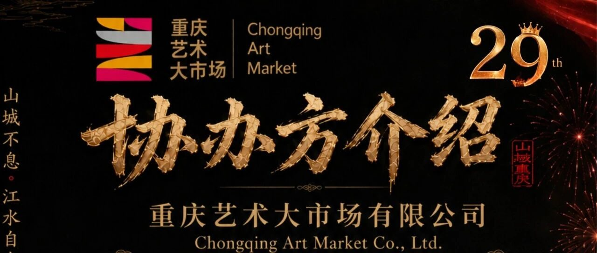
重庆艺术大市场协办《重庆市民》墨尔本城市音Live Film，以艺术出海助力重庆城市文化国际传播
近日，重庆艺术大市场有限公司作为协办单位，参与支持将在澳大利亚墨尔本举办的《重庆市民》城市音乐 Live Film
用音乐、影像与艺术讲述重庆：《重庆市民》暨重庆直辖29周年庆祝活动即将登陆墨尔本
由 澳洲重庆市文化体育教育旅游协会 与 维州多元文化社区促进会 共同主办，HYSTON PRODUCER 制作的《重庆市民》城市音乐 Live Film 暨重庆直辖29周年庆祝活动，将于 2026年6月18日 在澳大利亚墨尔本 Chinatown Cinema 举办。
服务贸易，正在成为中澳合作的下一座桥
澳洲重庆市商会关注《服务贸易新观察》，探索中澳优质服务贸易合作新路径